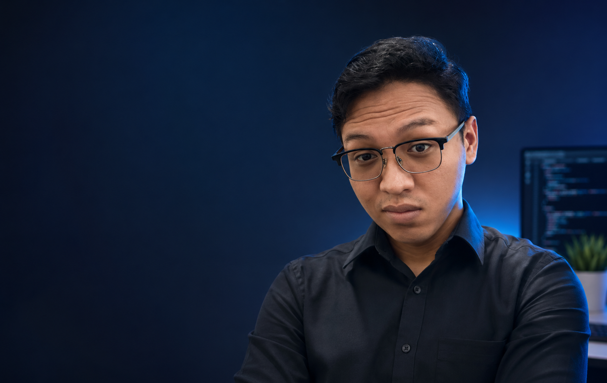

Halo, saya Peryanur, mahasiswa Program Studi Teknik Informatika yang memiliki minat besar dalam dunia teknologi, pengembangan aplikasi, serta inovasi digital. Saat ini saya sedang menempuh pendidikan di semester awal dan terus mengembangkan kemampuan di bidang pemrograman, basis data, analisis sistem, serta teknologi berbasis komputer. Saya percaya bahwa teknologi tidak hanya tentang menulis kode, tetapi juga tentang menciptakan solusi yang dapat membantu banyak orang. Karena itu, saya tertarik untuk mempelajari berbagai bidang seperti pengembangan aplikasi, manajemen sistem informasi, teknologi augmented reality (AR), serta solusi digital untuk UMKM dan masyarakat.
